Hanning
Grobkörniger, rotbrauner Granit
Höhe: 107 cm
Breite: 47 cm
Runenhöhe: zw. 10 - 10,9 cm
Runeninschrift :
V..., Tues Sohn, errichtete diesen Stein für Gyde, seine Mutter, ... kil ...ritzte...

15 - Hanning - Letztes Update 04.08.2025
Listennummer : DR 48 / DK SJy 15
Navidaten: 56.01914 8.51179 oder: Kirkebakken 12, 6900 Skjern
Transliteration: ua-- : tofa : su(n) | rsþi : sten : þene : | eftir : Gyþu : moþ-|r : sina : | (:) (e)--kil : h...
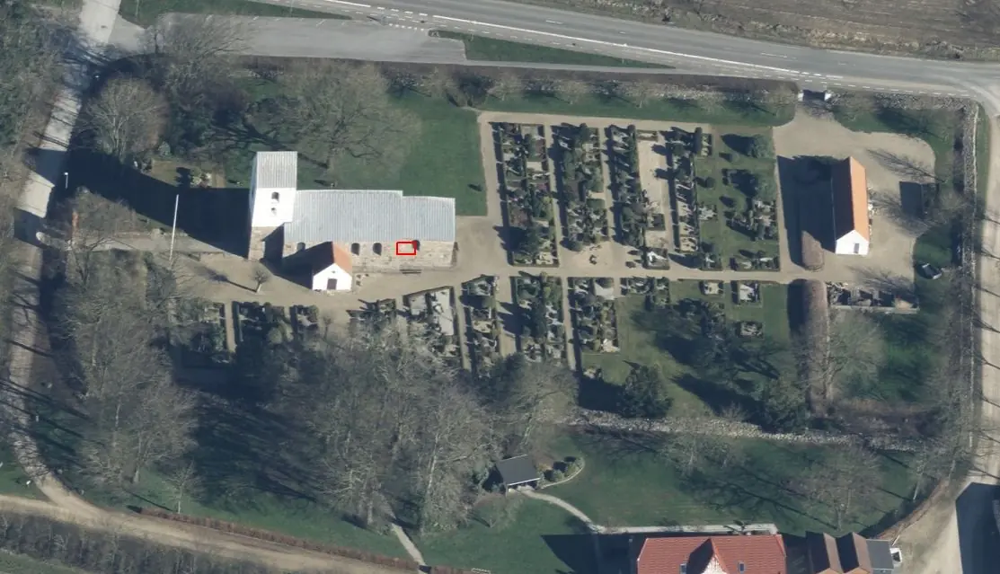
Dies ist ein Luftfoto vom 02.04.2023 von Skråfoto das die Kirche von Hanning zeigt. Skråfoto ist eine Webanwendung, die von Klimadatastyrelsen - Freie Nutzung unter Beachtung der Lizenz: CC BY 4.0. Die Aufnahmen werden seit 2017 alle zwei Jahre erneuert und neben einer Senkrechtaufnahme wird ein Schrägbild aus jeder Himmelsrichtung angeboten, das man über eine Adresssuche aufrufen kann. Den Standort des Runensteins habe ich rot umrandet.
Über diesen Runenstein wurde erstmals im Jahre 1843 berichtet, obwohl er zu der Zeit sicher schon seit Jahrhunderten gut sichtbar in der Kirchenwand eingemauert war. Er befindet sich in der Südwand des Chores - rechts vom Waffenhaus, 6. Steinreihe oberhalb des Sockels - querliegend in ca. 2,65 m über dem Erdboden. Dazu findet sich in der Hinterlassenschaft von P. G. Thorsens in der Königlichen Bibliothek in Kopenhagen unter NKS 3296 kvart (Schachtel 17) eine von ihm vorgenommene Abschrift des Briefs des Schullehrers Hans Jørgensen (*16.05.1802 - 09.07.1876, Lehrer und Kirchensänger in der benachbarten Gemeinde Lemb - begraben auf dem Grimstrup Kirchhof - link-LIVES) vom 01.11.1843, über den dieser die Entdeckung des Runensteins anmeldet. Darin findet sich auch die allererste Skizze die es zu dem Runenstein überhaupt gibt.
Zu dem Original habe ich eine Anfrage an das Antikvarisk -Topografisk Arkiv, das dem Nationalmuseum in Kopenhagen angeschlossen ist, gestellt. Dort ist es aber trotz aufwändiger Suche - Danke Danial - nicht auffindbar.
An dieser Stelle geht mein herzlicher Dank an das "Lokalhistorisk Arkiv for Hanning, Finderup, Bølling og Sædding" und dort Herrn Erik Fogh Rasmussen (Bildnis ganz unten auf der Webseite), der mir auf meine E-Mail Anfrage hin die kompletten Personalien des Lehrers über seine Recherchen herausfinden konnte.
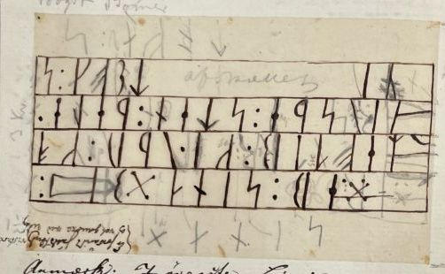

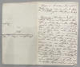

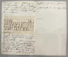
Die Inschrift hat eine parallele Anordnung von vier gleichlangen horizontalen Linien und endet mit der hochkantstehenden, kurzen Zeile. So wie der Stein eingemauert ist, müsste er eigentlich einmal nach links gedreht werden (siehe unten Thorsen/Moltke), wodurch die kurze Linie oben steht. Die Inschrift beginnt in seiner jetzigen Position in der oberen Zeile und liest sich von rechts nach links. So verhält es sich auch mit den drei darunter liegenden Zeilen. In der untersten Zeile ist am linken Ende ein Thorshammer eingeritzt. Die Inschrift endet in der (heute) am rechten Steinrand senkrecht liegenden kurzen Linie und wird von oben nach unten gelesen.
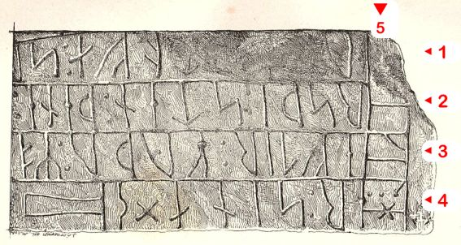
Bildquelle siehe unten - Leserichtung von mir visualisiertEiner anderen Interpretation zufolge handelt es sich bei der Darstellung des "Thorshammers" in dieser Inschrift nur um das Werkzeug des Runenmeisters.
Da der Runenstein an allen vier Seiten zu einem Quader zurechtgehauen wurde, kennen wir seine ursprüngliche Form leider nicht. Bei einer Untersuchung durch Erik Moltke (siehe unten) am 02.05.1935 wurde versucht den Stein aus der Mauer zu nehmen. Als man den umgebenden Mörtel entfernt hatte, zeigte sich aber, dass der Stein nicht isoliert alleine sitzt, weshalb der Versuch aufgegeben wurde.
Die Inschrift wird in die späte Wikingerzeit / Übergang ins Mittelalter datiert (1025-1250). Er weist von der Art her Ähnlichkeiten mit dem Runenstein im benachbarten Ådum auf.
Ich habe ein eigenes Foto aus den 1980er Jahren digitalisiert und links eingestellt.
Am Montag, 30.05.2022, habe ich im Rahmen meiner 2022er Jütland Wikingertour auch Halt an der Kirche von Hanning gemacht. Dabei habe ich diese Fotografien gefertigt.
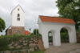 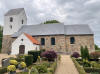 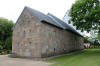 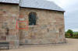 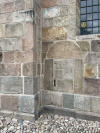 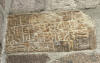


Eine frühe Zeichnung wurde durch Rasmus Henrik Kruse (*07.08.1796 - 30.05.1877, Landschaftsmaler - link-LIVES - Heirat 21.12.1851)
 Bildquelle:
Det Kgl. Biblioteks billedsamling - Lizenz:
Public Domain
Bildquelle:
Det Kgl. Biblioteks billedsamling - Lizenz:
Public Domain
im Jahr 1857 gefertigt. Er hat sie mit seinen handschriftlichen Ausführungen in seine Abhandlung "Nørre Jyllands Mærkværdigheder i det 19. Aarh. Hs. Bd 1-2 (med) Tillæg 1-2" in der Beilage (Tillæg) 2, S. 30-31, Bildtafel 17, aufgenommen.
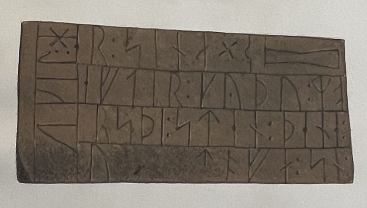
Dieses Werk wird heute in Kopenhagen, Nationalmuseum, Antikvarisk-Topografisk Arkiv, aufbewahrt. Dort durfte ich am Dienstag, 27.09.2022, zu Gast sein und die vier Bände in Händen halten und fotografieren.
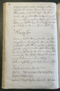 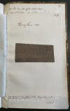 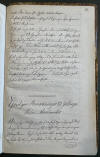


Durch Jacob Kornerup (*19.11.1825 - 09.03.1913, dänischer Archäologe und Zeichner aus Roskilde - link-LIVES)
 Bildquelle:
Wikipedia
- Lizenz:
Public Domain
Bildquelle:
Wikipedia
- Lizenz:
Public Domain
wurde im Jahr 1865 eine Zeichnung in seinem Tagebuch - Seite 13 - getätigt.
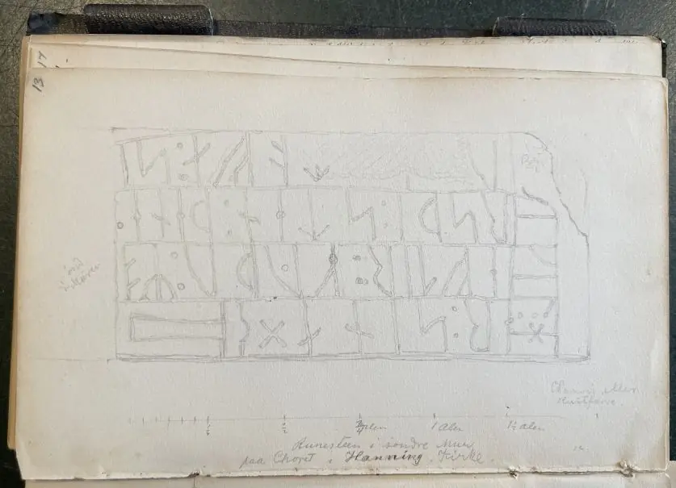
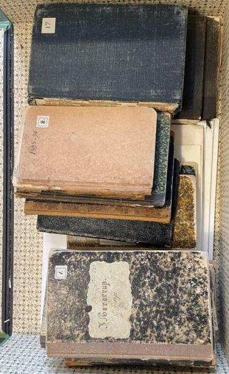
Dessen Tagebücher werden heute ebenfalls im Antikvarisk-Topografisk Arkiv in Kopenhagen aufbewahrt, wo ich diese Fotos aufnehmen durfte.
Der Nachlass von Prof. P. G. Thorsen (*07.08.1811 - 06.05.1883, Bibliothekar, Runenforscher und Historiker - link-LIVES - Artikel: Levnedsbeskrivelser af de ved Københavns Universitets Firehundredaarsfest promoverede Doktorer, Illustreret Tidende 1882, Nr. 1235 - vom 27.05.1833 / Grabstein in Varde / Eheschließung in Varde am 19. August 1848)
 Bildquelle: Fotografie zw. 1863-1900 von
Fotograf Budtz Müller (*26.12.1837 -
30.12.1884) -
Det Kgl. Biblioteks billedsamling - Lizenz:
Public Domain
Bildquelle: Fotografie zw. 1863-1900 von
Fotograf Budtz Müller (*26.12.1837 -
30.12.1884) -
Det Kgl. Biblioteks billedsamling - Lizenz:
Public Domain
findet sich in der Königlichen Bibliothek in Kopenhagen unter NKS 3296 kvart (Verteilt auf mehrere einzelne Pappschachteln). Darunter befindet sich in der Schachtel 17 noch diese Zeichnung von Jacob Kornerup aus dem Jahr 1865.
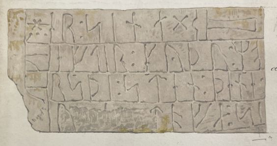

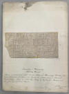
Ergänzend dazu findet sich in der Schachtel 6 ein Brief von Jacob Kornerup - datiert auf den 23.10.1865 - an P. G. Thorsen. Er bringt darin zunächst vor, dass er ihm damit insgesamt vier Zeichnungen übersendet. Den Brief schließt er mit der Hoffnung, dass sein Honorar für die vier Zeichnungen mit 15 Rd als nicht zu hoch angesetzt erscheint. Die Währungseinheit Rigsdaler war in Dänemark von 1854-73 in Gebrauch und wurde danach von der Krone abgelöst. Für einen Rigsdaler gab es damals 2 Kronen.


Die erste Veröffentlichung - 1876 - einer Abbildung auf Basis der Zeichnung von Rasmus Henrik Kruse und eigenen Untersuchungen wurde durch Carl Nicolai Henry Petersen (*20.03.1849 - 21.09.1896, dänischer Archäologe, 1879 im Nationalmuseum angestellt, ab 1892 als Leiter der Mittelalterabteilung - link-LIVES)
 Bildquelle:
Wikipedia
- Lizenz:
Public Domain
Bildquelle:
Wikipedia
- Lizenz:
Public Domain
in dem Werk "Om Nordboernes Gudedyrkelse og Gudetro i Hedenold, Kbh. 1876, s. 52" vorgenommen, die ich hier wiedergebe (Aus Digitalisat des Buches von der Webseite "ZB MED - Informationszentrum Lebenswissenschaften").
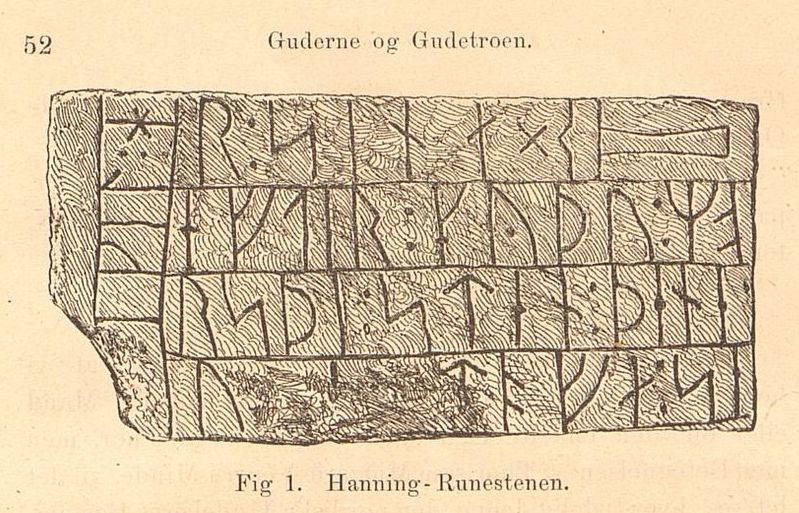
Durch George Stephens (*13.12.1813 - 09.08.1895, englischer Archäologe und Philologe)
 Bildquelle:
Minder fra min Virksomhed paa Arkæologiens
Omraade fra 1845 til 1908 von
Magnus Petersen (*04.09.1827 - 01.02.1917) auf der
Seite 265 - Lizenz:
Public Domain
Bildquelle:
Minder fra min Virksomhed paa Arkæologiens
Omraade fra 1845 til 1908 von
Magnus Petersen (*04.09.1827 - 01.02.1917) auf der
Seite 265 - Lizenz:
Public Domain
wurde 1878 in seinem Buch mit dem Titel "Tordneren Thor" auf der S. 36/37 ein Beitrag zum Hanning Runenstein mit der Zeichnung von Rasmus Henrik Kruse veröffentlicht. Das Werk gab es 1878 auch in einer englischsprachigen Ausgabe unter dem Titel "Thunor the Thunderer, carved on a Scandinavian font of about the year 1000. The first yet found god-figure of our Scando-Gothic forefathers". Der hier relevante Beitrag ist auch darin auf den S. 36/37 zu finden.
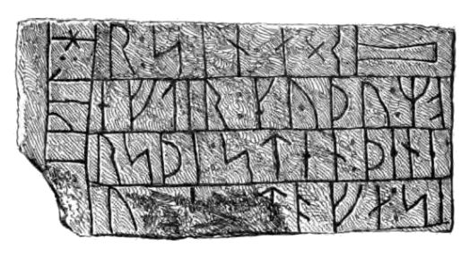
In seinem Runenwerk De danske runemindesmærker beskrevne og forklarede, anden Afdeling, Jyllands Runemindesmærker, I. Afbildninger, 1879, Nr. 86 hat P. G. Thorsen die Zeichnung von Jacob Kornerup aufgenommen - Scan aus dem in meinem Besitz befindlichen Exemplar - von mir einmal nach links gedreht.
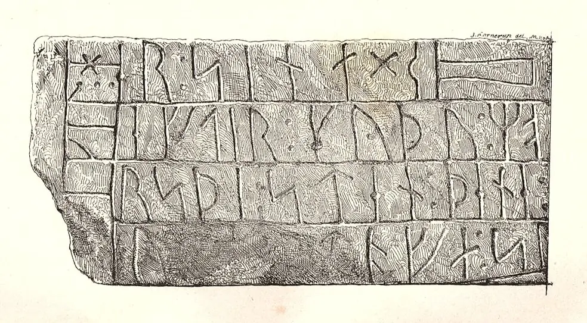
In seinem Band II, Text, 1880, macht er dann auf den S. 203-204 auch schriftliche Ausführungen zu diesem Runenstein, den er selbst 1845 begutachtet hatte.
Prof. Ludv. F. A. Wimmer (*07.02.1839 - 29.04.1920, Philologe und Runenforscher - link-LIVES - Politiets registerblade - Bestattungsprotokoll)
 Bildquelle:
Fotografie zw. 1877-1900 von Fotograf Hansen & Weller
-
Det Kgl. Biblioteks billedsamling - Lizenz:
Public Domain
Bildquelle:
Fotografie zw. 1877-1900 von Fotograf Hansen & Weller
-
Det Kgl. Biblioteks billedsamling - Lizenz:
Public Domain
bringt seine Forschungsergebnisse in seinem großformatigen Werk "De danske runemindesmærker undersøgte og tolkede af Ludv. F. A. Wimmer, Andet Bind, Runestenene i Jylland og på øerne. 1899-1901, Nr. 63, S. 293" - eigener Scan. Er hat den Runenstein persönlich vor Ort am 27.August 1878 und nochmals am 24.07.1892 untersucht.
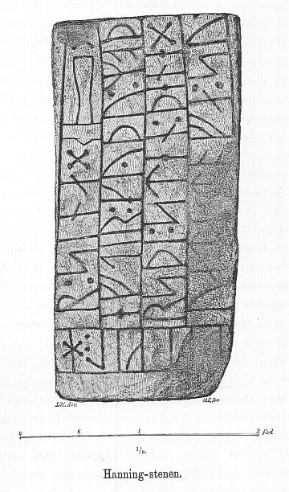
Ludv. F. A. Wimmer hat seine jahrelangen Aufzeichnungen der
"Kgl.
Bibliotek" in
Kopenhagen überlassen. Ein
Verzeichnis darüber wurde 1915 in Buchform herausgegeben -
In seinen Unterlagen in der Bibliothek befinden sich unter "III - Originaltegninger af de danske Runemindesmærker, udførte paa Undersøgelsesrejserne af Magn. Petersen og kontrollerede paa Stedet af Ludv. Wimmer, samt Prøvetryk af de paa Grundlag af de nævnte Tegninger, Aftryk o. s. v. til De danske Runemindesmærker" udførte Afbildninger med Wimmers Rettelser"


zu dem Runenstein von Hanning unter der Nr. 75 handschriftlichen Aufzeichnungen von 1878 und 1892, wobei ich am 27.09.2022 diese Zeichnung von Magnus Petersen - datiert auf den 27.08.1878 - fotografieren durfte.
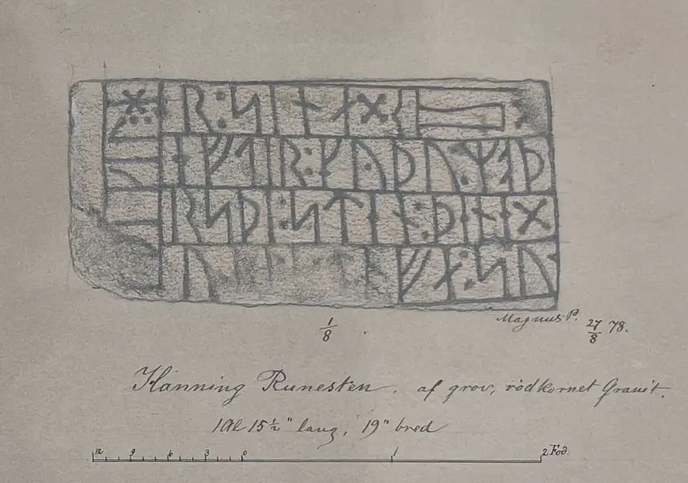
Diesesw Aufnahme des Runensteins von Hanning, die von Erik Moltke (*04.04.1901 - 19.10.1984, Runologe, Historiker - link-LIVES)
 Bildquelle: Scan von Buchumschlag "Runerne i Danmark og ders
oprindelse" - Erik Moltke - 1976 - Lizenz:
CC-BY-SA
Bildquelle: Scan von Buchumschlag "Runerne i Danmark og ders
oprindelse" - Erik Moltke - 1976 - Lizenz:
CC-BY-SA
aufgenommen wurde, ist der digitalen Sammlung des Dänischen Nationalmuseums Kopenhagen - Lizenz: CC-BY-SA- entnommen. In der Position war der Runenstein wohl ursprünglich aufgestellt gewesen. Herr Moltke hat den Stein am 08.06.1931 und am 02.05.1935 fotografiert/studiert.
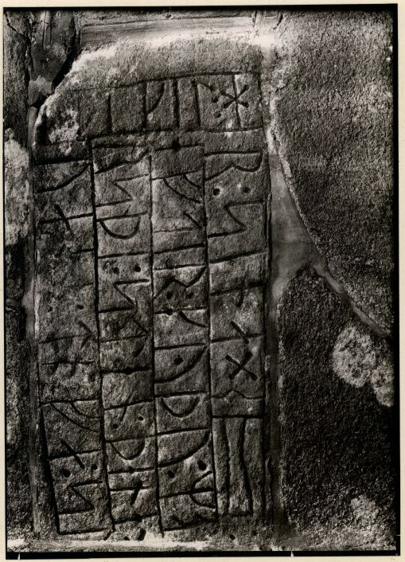
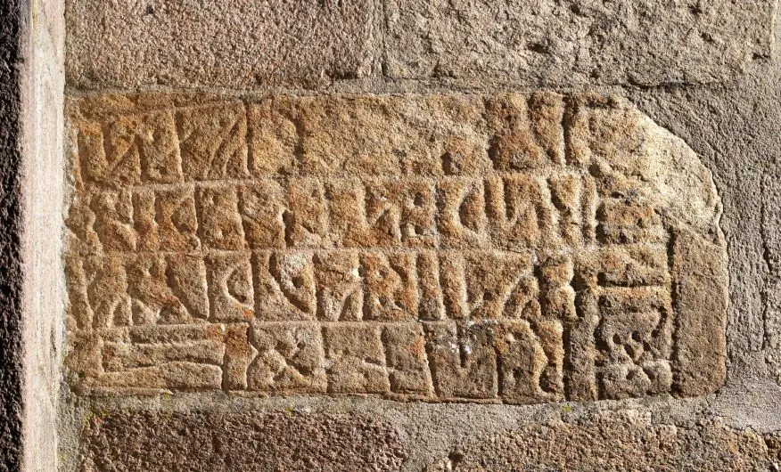
Im Vorfeld zu dem 2016 erschienenen Buch von Lisbeth M. Imer (*1973, Runologin am Nationalmuseum Kopenhagen) "Danmarks Runesten - en fortælling" reiste sie mit dem Fotografen Roberto Fortuna zur Bestandsaufnahme durch die Lande. Dieser hat die Runensteine abends bei Dunkelheit mit Schräglicht aufgenommen und darüber wirklich herausragende Fotos erzielt. Diese Aufnahme entstand im März 2012.
Der digitalen Datenbank des Nationalmuseums Kopenhagen entlehnt - Lizenz: CC-BY-SA
Die Informationen der dänischen Online-Runen-Datenbank zu diesem Runenstein (in dänischer Sprache) finden sich hier.
Die Informationen aus der Datenbank "Fund og Fortidsminder" finden sich hier. Darin ist inzwischen dieser Zustandsbericht des Steinrestaurators Leif Vognsen aus dem Jahr 2018 eingebettet.
Über die Webseite "Runes" - ein Forschungsprojekt der Akademie zu Göttingen - kann man diese Informationen zum Runenstein von Hanning abrufen.